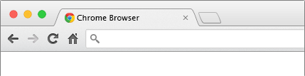

The faster way to acces your favorite websites!
Getting started
GOTO is a Chrome extension that helps you navigate through all your most favorite websites. It allows to create ‘textual’ shortcuts that you can use directly within the url bar.
It is only available for chrome at the time, and it can be downloaded directly from the Chrome Web Store. Feel free to rate it!
Bring your shortcuts with you everywhere as they will be associated with your Google account.
Although the extension is asking for a lot of permission, it is only to acces to easy redirection functionnalities. The code is open source and can be reviewed easily if any doubt concerning privacy issues.
How to use it?
If you reading these lines, then you want to have a better understanding on how to use it. Don't worries, the three following step will show you how simple it is!
Create your shortcuts
Add shortcuts by using the built-in interface. Click on the button of the GOTO extension, and it will automatically help you to add a shortcut for the current website your browsing:
Tips: Use your shortcuts to resolves conflit and acces specific web pages with complex URLs.
Use your shortcuts
Now let's assume that you already created a new shortcut 'g' so that you can have a quick access to your gmail account:
g
https://www.gmail.com
You now just have to use this shortcut wihtin the URL bar, end it with a ’/’, and press enter.
And voila! You are being redirected to your beloved gmail account:
Manage your shortcuts
Conveniently, you also can manage your shortcuts. And remember, they are synced to your Google account, so you can bring them everywhere with you!
At the moment, you can only add and removed shortcuts. You should be able to edit them directly in the future!
Contribute
If you know you way around Javascript, there is plenty of simple ways to improve GOTO. Checkout the Github repository and don’t hesitate to sumbit a pull request!
Also, I would like to thank Pierre-Marie Dartus for his great contribution!
Alexis Fasquel